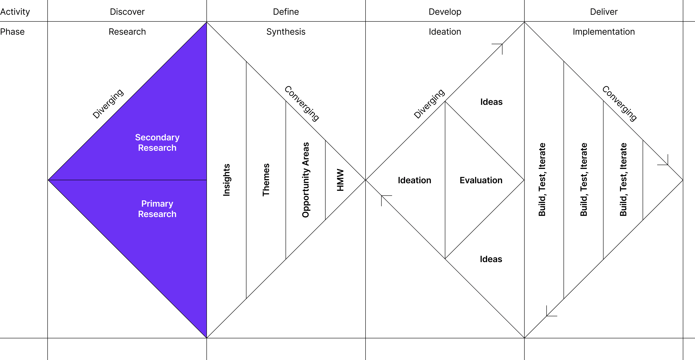
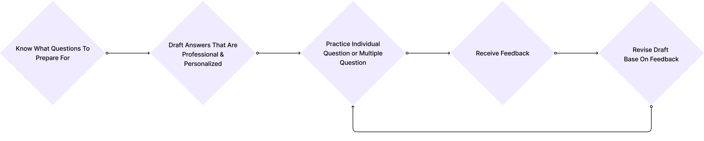
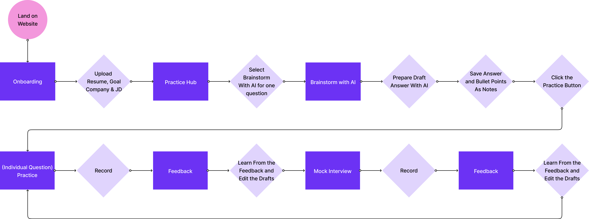
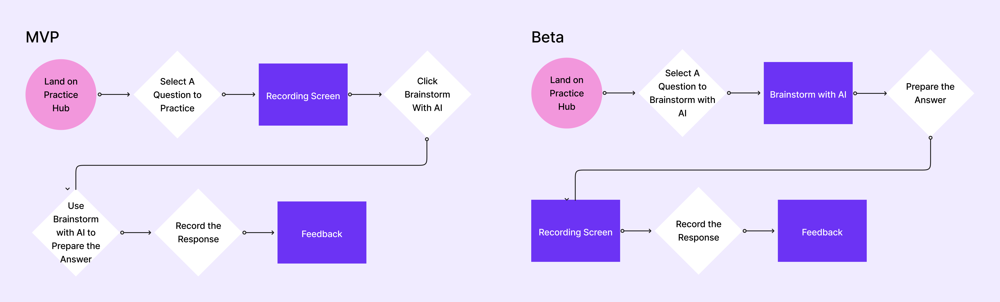

As the founding designer, I led the design of Enterview AI's beta and launch versions, incorporating user feedback to create user-centric designs aligned with product and business goals.
I developed and refined prototypes through an iterative process, while driving marketing strategy and contributing to product strategy for cohesive alignment between design and business objectives.
Skills
User Experience Design
Brand Visual Design
User Research
Go-to-market Strategy
Product Management
My Role
Design Lead
Timeline
05.2024 - 08.2024
Collaborators
Eric Hu, Michael Wang
Overview
Enterview AI is an innovative interview preparation platform that helps students and young professionals prepare their interviews.
Founded by CMU students and alumni, the intention was to create an AI agent that helps the co-founders and their peers to prepare for interviews in a more efficient and effective way. After getting positive feedback of our MVP AI feature, Brainstorm with AI, we decided to expand the product to a full interview preparation platform.
Founded by CMU students and alumni, the intention was to create an AI agent that helps the co-founders and their peers to prepare for interviews in a more efficient and effective way. After getting positive feedback of our MVP AI feature, Brainstorm with AI, we decided to expand the product to a full interview preparation platform.
Objective
 Identify and analyze user pain points, then strategically translate them into valuable features.
Identify and analyze user pain points, then strategically translate them into valuable features.
 Design an easy-to-use and trustworthy product with a visually appealing brand identity.
Design an easy-to-use and trustworthy product with a visually appealing brand identity.
 Leverage AI technology to deliver content that is highly personalized and professional.
Leverage AI technology to deliver content that is highly personalized and professional.
Strategic Value
It is meaningful to create a product and service that help to ease the stress early 20 year olds are facing when they first enter the job market. The mission of Enterview AI is to help students and young professionals to be confident after the product.
Our product will be launched in October to test out product-market fit. We are aiming to have 1000 users by the end of the year.
Our product will be launched in October to test out product-market fit. We are aiming to have 1000 users by the end of the year.
“It was very helpful to know what to improve and see my progress.”
- MVP User Testimonial
“What I really like is how this Brainstorm feature helped me to draft my answers step by step.”
- MVP User Testimonial
Approach
The founding team decided to approach our product referencing the frameworks and approaches of the double diamond approach and lean startup - embracing the iterative approach and work in parallel efficiently.

Discover & Define
The founding team started by doing desktop research and 20+ sessions of interview sessions with students and young professionals. Here are a glimpse of what we learned from our research.
80% Have Concerns About Interview Questions
Most of our interviewees mentioned that they are not sure which questions to prepare for. Although many can find some questions online, they are not sure if the questions are trustworthy or good enough.
Most of our interviewees mentioned that they are not sure which questions to prepare for. Although many can find some questions online, they are not sure if the questions are trustworthy or good enough.
76% Don't Know How To Evaluate Their Answers
Many of our interviewees mentioned not knowing how to access the quality of their prepared answers. Although they can do mock sessions with friends, their friends are generally on the same level as them.
Many of our interviewees mentioned not knowing how to access the quality of their prepared answers. Although they can do mock sessions with friends, their friends are generally on the same level as them.
100% Take Notes In Some Shape Or Form
All interviewees mentioned note-taking, with about two-thirds using digital tools exclusively and the rest using both digital and physical tools. All expressed a desire for a tool to help with organizing their thoughts.
All interviewees mentioned note-taking, with about two-thirds using digital tools exclusively and the rest using both digital and physical tools. All expressed a desire for a tool to help with organizing their thoughts.
I also initiated the competitor analysis with our product interns, looking closely at 8 products within the interview prep realm on the aspects of target user, features, AI functions, pricing strategy, marketing channels, backed capital, etc.
Here are some takeaways.
Here are some takeaways.
Although resume is one of the key factors in the interview process, it is a saturated market with many competitors, both toC and toB, thus, it is hard to be a selling point for us.
Data is essential. It is important to gather insights on how users perceive our model for continuous improvement, as well as to collect data on the latest interviews to create unique value to our users.
Privacy is important when it comes to AI. We need to be transparent about how we use our users' data, such as their resume and past experiences, and how we protect their privacy.

How might we help students and young professionals prepare their interview answers more effectively and efficiently, while maintain personalized?
Develop & Deliver
Mapping Out User Needs
In the development phase, we transitioned from understanding user needs to creating a solution that would seamlessly address those needs through our product. We began by mapping out the users' jobs to be done, a framework that allowed us to deeply understand the primary goals and tasks users aim to accomplish when preparing for interviews. This mapping process became the foundation for designing a comprehensive user journey that guided our product development.

We translated these insights into the user flow that shaped key features, ensuring every step in the user flow aligned with the users' primary objectives. This visual mapping not only helped us prioritize features but also ensured a smooth, intuitive experience for the end users, which is represented in the user flow graphics we developed.

Why AI?
The decision to integrate AI into Enterview AI wasn't just about leveraging emerging technology—it was about addressing specific user pain points in a way that no traditional approach could fully solve. Here’s why AI was critical for our product:
Personalization at Scale
In interview preparation, there’s no one-size-fits-all solution. AI enables us to offer personalized feedback tailored to each user's responses, career goals, and industry expectations.
Real-time, Iterative Learning
Interviews require quick thinking and adaptability. By integrating AI, we enable users to practice in an environment where they can receive immediate feedback and refine their responses as they go.
Consistency and Availability
AI provides a consistent standard of feedback, ensuring that every user, regardless of when or how often they practice, gets the same level of personalized, data-driven insights. The AI is available 24/7, offering a reliable practice partner whenever users need it, regardless of time constraints or scheduling conflicts with coaches.
Simulating Real-World Pressure
Interviewing isn’t just about giving the right answers; it’s about managing pressure. Our AI simulates interview scenarios by adapting to user responses and creating follow-up questions based on the direction of the conversation. This helps users build the mental resilience and quick thinking needed for real-life interviews, which are often unpredictable and nerve-wracking.
Personalization at Scale
In interview preparation, there’s no one-size-fits-all solution. AI enables us to offer personalized feedback tailored to each user's responses, career goals, and industry expectations.
Real-time, Iterative Learning
Interviews require quick thinking and adaptability. By integrating AI, we enable users to practice in an environment where they can receive immediate feedback and refine their responses as they go.
Consistency and Availability
AI provides a consistent standard of feedback, ensuring that every user, regardless of when or how often they practice, gets the same level of personalized, data-driven insights. The AI is available 24/7, offering a reliable practice partner whenever users need it, regardless of time constraints or scheduling conflicts with coaches.
Simulating Real-World Pressure
Interviewing isn’t just about giving the right answers; it’s about managing pressure. Our AI simulates interview scenarios by adapting to user responses and creating follow-up questions based on the direction of the conversation. This helps users build the mental resilience and quick thinking needed for real-life interviews, which are often unpredictable and nerve-wracking.
User Testing and Feedback Loops
Starting from the MVP, we have constantly engage with potential users in both in-person and online testing sessions.
We conducted over 20 usability testing sessions using our alpha version (MVP) and beta version to evaluate how well our product met the users’ goals. This approach helped validate the user flow and provided actionable feedback that led to multiple refinements in design and functionality.
For example, we refined our Brainstorm with AI function after receiving feedback that users wanted to know what to expect before starting a session, when will the conversation end, and a place to save their conversation, which also inspired us to create a Notes feature.

Reflection
In the era of AI, many companies emphasize their technology as a unique selling point. However, through conversations and user testing sessions with potential users, we confirmed that our users aren't primarily interested in which AI model we use or how advanced our multi-model AI is. Instead, they care most about how effectively our product addresses their specific problems.
Beyond design, I played a critical role in feature development and prioritization, working closely with the our CEO, product lead, and engineers to ensure our product roadmap aligned with user needs and business goals. This experience strengthened my skill in balancing creativity with strategic decision-making.
At Enterview AI, as the design lead, I learned to balance thinking about the future of the product with solving present challenges. While addressing the current needs of users, I also had to consider how the interview process might dramatically evolve over the next five years, particularly with the rise of AI. This required forward-thinking design choices that could adapt to future trends while still providing immediate solutions.